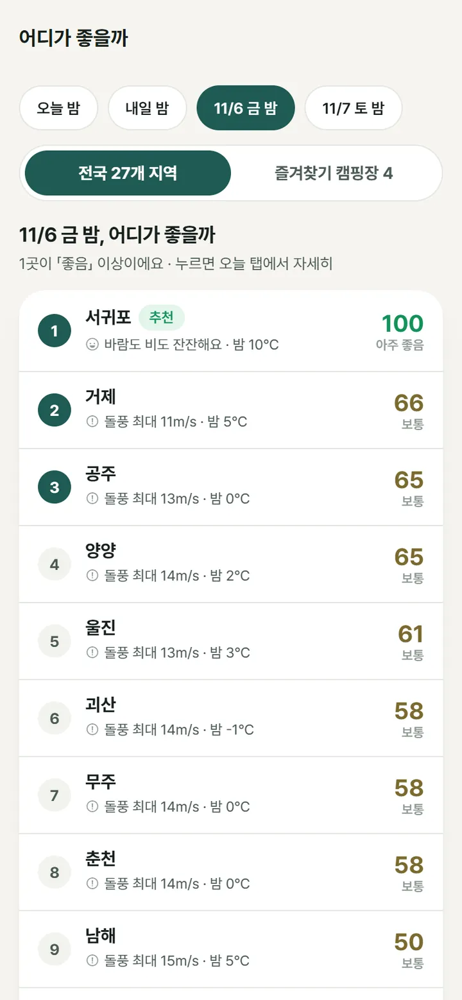
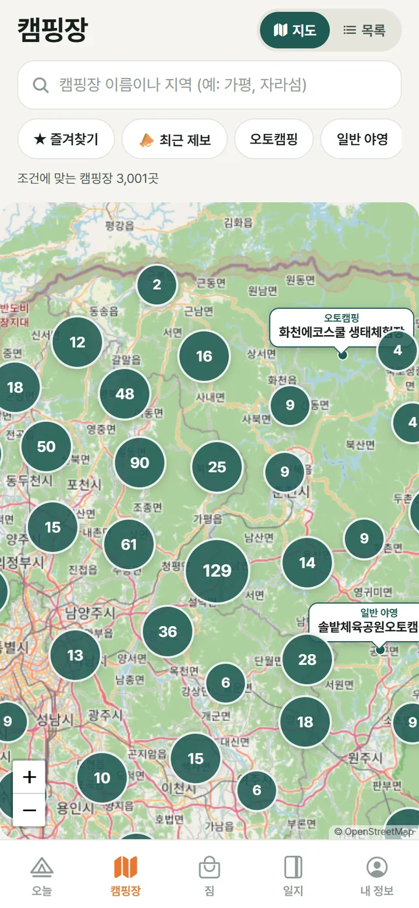
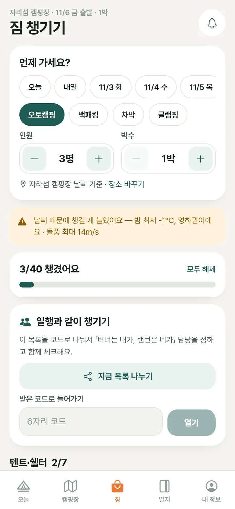
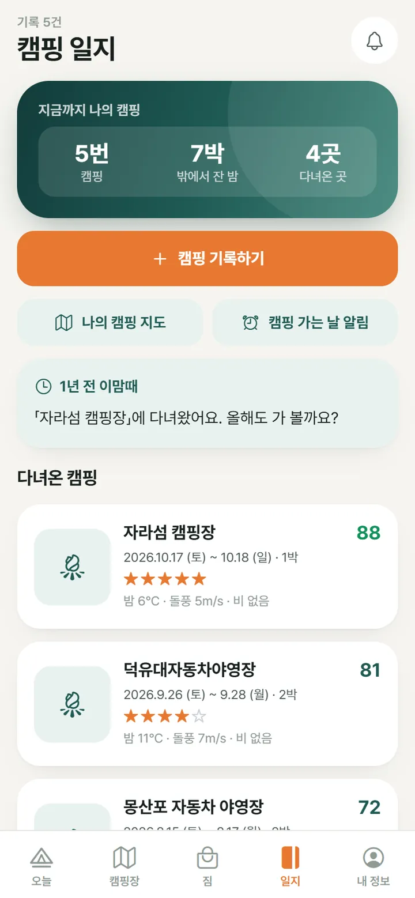
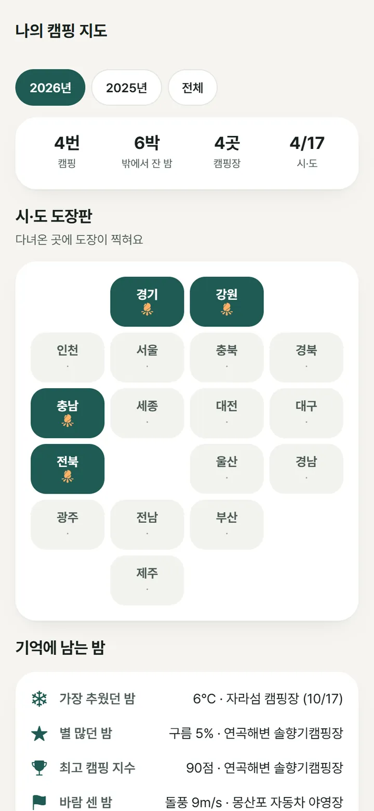
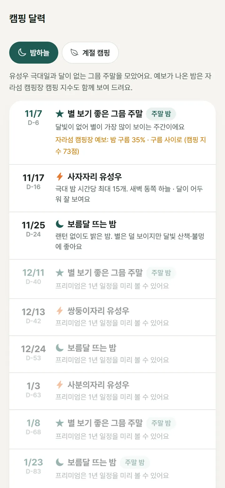

원하는 조건만 골라요
오토캠핑글램핑카라반반려견전기계곡바다숲·산강·호수🚙 차박
차박은 소개 글 기준으로 표시하고, 확실하지 않은 곳은 「문의 필요」로 따로 알려 드려요.
도착하는 낮부터 철수하는 아침까지, 바람과 비와 밤 기온을 모아 점수 하나로 알려 드려요. 몇 점인지보다 왜 그 점수인지를 먼저 말해 드려요.
캠핑 지수
캠핑은 그날 12시 도착부터 다음 날 10시 철수까지예요. 그 시간의 시간별 예보로 100점에서 감점만 하고, 가장 큰 감점 이유를 한 줄로 알려 드려요.
차박·글램핑은 바람에, 글램핑은 추위에 덜 민감하게 따로 계산해요.
좋음
바람 최대 8m/s — 타프는 낮게 쳐요
3계절 침낭 (컴포트 5℃)
앱에서는 시간별 예보로 계산하고 평균 풍속·습도·자외선·천둥·특보까지 더해요. 점수는 참고용이에요.

주말 순위
금요일 밤, 토요일 밤 중 하나를 고르면 전국 27개 지역의 같은 밤 점수를 한 줄로 세워 드려요. 즐겨찾기한 캠핑장끼리만 겨뤄 볼 수도 있어요.
지역을 누르면 그곳의 오늘 탭으로, 캠핑장을 누르면 상세로 바로 가요.
캠핑장 지도
한국관광공사 고캠핑 데이터를 매일 새로 받아요. 사진과 시설을 보고, 그 캠핑장의 이번 주 캠핑 지수를 바로 확인해요.

차박은 소개 글 기준으로 표시하고, 확실하지 않은 곳은 「문의 필요」로 따로 알려 드려요.
「강가 쪽 사이트는 바람이 좀 있어요. 밤하늘은 최고!」2시간 전 · 이용자 제보
캠핑 중인 사람들이 남긴 최근 72시간 제보를 봐요. 궁금하면 「지금 거기 어때요?」로 물어볼 수도 있어요.
예약이 열리는 날짜와 시각을 넣어 두면 폰이 미리 깨워 드려요. 매달 같은 날 열리는 곳은 반복으로.
짐 챙기기
출발일과 박수, 인원을 고르면 그 밤 예보를 보고 필요한 장비를 켜 드려요. 캠핑 형태에 맞춘 59가지에서 시작하고, 물은 인원·박수만큼 계산해요.

일지 · 캠핑 지도 · 달력
캠핑장과 날짜만 남기면 그 밤의 최저 기온·돌풍·비·구름을 찾아 붙여 드려요. 1년 뒤 같은 철엔 「1년 전 이맘때」가 찾아와요.

다녀온 곳에 도장이 찍히는 17칸 지도와 해마다의 결산. 가장 추웠던 밤, 별 많던 밤까지.

유성우 극대일, 달 없는 그믐 주말, 벚꽃·반딧불이·단풍·눈꽃 시기를 한 달력에. 누르면 그 철에 맞는 캠핑장을 찾아요.

첫 영하 캠핑, 비 오는 밤, 사계절 완주, 시·도 정복. 레벨은 입문에서 불멍 장인, 캠핑왕까지 올라가요.
캠핑 알림
일지에 다녀올 캠핑을 넣어 두면 전날 저녁, 그 밤의 캠핑 지수와 침낭 추천을 보내 드려요.
지금 캠핑 중이거나 내일 가는 곳에 강풍·태풍·호우·대설·한파·폭염 특보가 나오면 바로 알려 드려요.
인기 캠핑장 예약 전쟁, 시각만 넣어 두면 10분 전에 깨워 드려요. 폰 안에서만 예약되는 알림이에요.
자주 묻는 질문
「이번 주말, 거기 캠핑 가도 괜찮을까?」에 답하는 캠핑 앱이에요. 도착하는 날 낮부터 다음 날 철수할 때까지의 바람·비·밤 기온·미세먼지·기상특보를 모아 캠핑 지수(100점)로 알려 드리고, 전국 캠핑장 지도, 날씨에 맞춘 짐 체크리스트, 캠핑 일지와 캠핑 달력을 함께 담았어요.
100점에서 시작해 감점만 해요. 돌풍과 평균 풍속, 비의 양과 설치할 때 비가 오는지, 밤 최저 기온, 낮 최고 기온, 습도와 자외선, 천둥·눈, 미세먼지 예보, 지금 발효 중인 기상특보를 봐요. 85점 이상 아주 좋음, 70점 이상 좋음, 50점 이상 보통, 30점 이상 주의예요. 점수는 참고용이니 출발 전엔 현장 기상을 꼭 다시 확인해 주세요.
한국관광공사 고캠핑 공공데이터로 운영 중인 전국 캠핑장 약 3천 곳을 하루 한 번 새로 받아요. 사진·시설·바닥·반려견 동반 여부를 보여 드리고, 예약은 각 캠핑장의 예약 페이지로 이어 드려요.
예약은 캠핑장마다 쓰는 예약 페이지로 이어 드려요. 대신 예약이 열리는 날짜와 시각을 넣어 두면 10분 전에 폰으로 알려 드려요. 매달 같은 날 열리는 곳은 반복 알림도 돼요.
캠핑장 소개 글에 차박이 적힌 곳은 「차박」으로, 오토캠핑·카라반 동반이 되는 곳은 「문의 필요」로 따로 표시해요. 허가되지 않은 노지 차박지는 일부러 다루지 않아요.
캠핑 지수, 캠핑장 지도, 짐 체크리스트, 같이 챙기기, 캠핑 일지, 나의 캠핑 지도는 모두 무료예요. 프리미엄은 캠핑 지수를 2주 앞까지 보여 주고, 알림을 더 일찍·더 넓게 보내 드려요.
일지는 폰 안에 저장해요. 미션과 백업을 위해 날짜·박수·캠핑장 이름·그날 날씨 같은 요약만 서버에 올리고, 사진과 메모 본문은 올리지 않아요. 자세한 내용은 개인정보처리방침에 있어요.
안드로이드(Google Play)부터 출시를 준비하고 있어요. 지금은 베타 테스터를 모집하고 있고, 베타 테스터 모집 페이지에서 신청할 수 있어요. 테스터께는 전설 뱃지 「베타 테스터」와 프리미엄 3개월을 드려요.
오늘캠핑은 Google Play 출시를 준비하고 있어요. 지금 베타 테스터가 되면 출시 전에 먼저 써 볼 수 있어요.
테스터께는 전설 뱃지 「베타 테스터」와 프리미엄 3개월을 드려요.
낚시도 다니세요? 같은 팀이 만든 오늘낚시도 있어요.